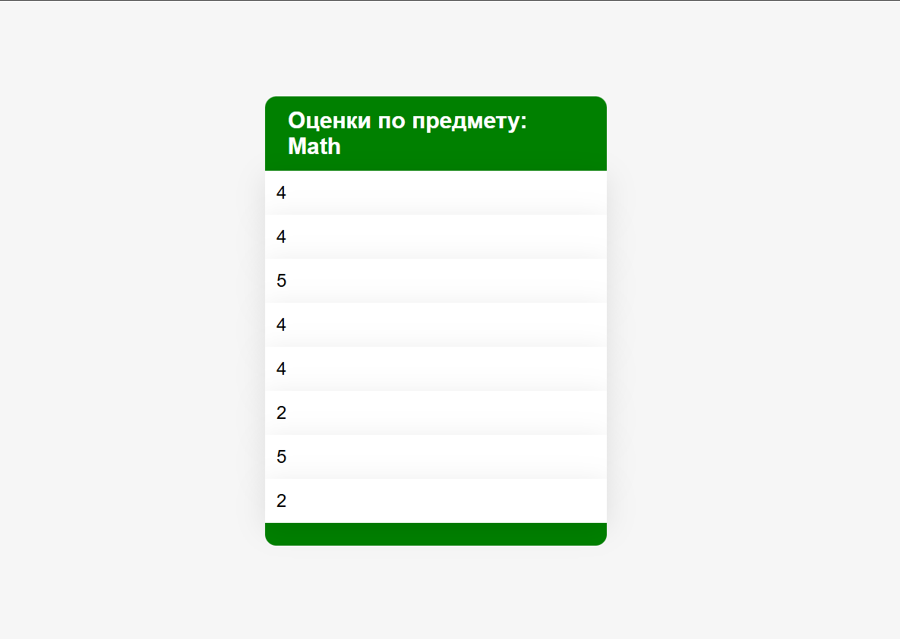

Лабораторная работа №1
Задание 1
Реализовать клиентскую и серверную часть приложения. Клиент отправляет серверу сообщение «Hello, server», и оно должно отобразиться на стороне сервера. В ответ сервер отправляет клиенту сообщение «Hello, client», которое должно отобразиться у клиента.
Код сервера:
import socket
socket = socket.socket(socket.AF_INET, socket.SOCK_DGRAM)
socket.bind(('', 8080))
max_user = 1
response = b"Hello, client"
while True:
client_data, addr = socket.recvfrom(1024)
if not client_data:
break
print(client_data)
socket.sendto(response, addr)
socket.close()
Код клиента:
import socket
socket = socket.socket(socket.AF_INET, socket.SOCK_DGRAM)
while True:
message = bytes(input(), 'utf-8')
socket.sendto(message, ('localhost', 8080))
response = socket.recv(1024)
if not response:
break
print(response)
socket.close()
Задание 2
Реализовать клиентскую и серверную часть приложения. Клиент запрашивает выполнение математической операции, параметры которой вводятся с клавиатуры. Сервер обрабатывает данные и возвращает результат клиенту.
Вариант операции: Поиск площади параллелограмма
Код сервера:
import socket
import math
server_socket = socket.socket()
server_socket.bind(('', 8080))
max_user = 5
server_socket.listen(max_user)
while True:
client_socket, addr = server_socket.accept()
client_data = list(map(lambda x: int(x), client_socket.recv(1024).decode().split()))
if not client_data or len(client_data) != 3:
print("Invalid parameters for triangle area task")
client_socket.close()
break
S = client_data[0] * client_data[1] * math.sin(client_data[2])
client_socket.send(bytes(str(S), 'utf-8'))
print(client_data)
socket.close()
Код клиента:
import socket
client_socket = socket.socket()
client_socket.connect(('localhost', 8080))
print("Please write the lengths of 2 sides and an angle of the parallelogramm:")
client_socket.send(bytes(input(), 'utf-8'))
res = client_socket.recv(1024)
print(f"Area = {res.decode()}")
client_socket.close()
Задание 3
Реализовать серверную часть приложения. Клиент подключается к серверу, и в ответ получает HTTP-сообщение, содержащее HTML-страницу, которая сервер подгружает из файла index.html. Код сервера:
import socket
socket = socket.socket(socket.AF_INET, socket.SOCK_STREAM)
socket.bind(('', 8080))
max_conn_count = 5
socket.listen(max_conn_count)
while True:
conn_socket, addr = socket.accept()
request = conn_socket.recv(1024).decode().split()
if request[0] != "GET":
conn_socket.close()
print("Bad Gateway")
conn_socket.send(b'Response 400')
conn_socket.close()
break
print(request)
with open('index.html', 'r') as index:
response = 'Response 200'
print("OK")
conn_socket.send(response.encode('utf-8'))
conn_socket.close()
Код клиента:
import http.client
host = 'localhost'
client_conn = http.client.HTTPConnection(host, 8080)
client_conn.request('GET', 'index.html')
response = client_conn.getresponse()
print(response.read().decode())
Код HTML-разметки
<!DOCTYPE html>
<html lang="en">
<head>
<meta charset="UTF-8">
<title>WEB Lab1-3</title>
</head>
<body>
<h1> Hello, it's html page, delivered from python socket server. </h1>
</body>
</html>
Задание 4
Реализовать двухпользовательский или многопользовательский чат. Для максимального количества баллов реализуйте многопользовательский чат.
Требования:
- Обязательно использовать библиотеку socket.
- Для многопользовательского чата необходимо использовать библиотеку threading.
Код сервера:
import socket
import threading
from copy import copy
max_conn_count = 10
locker = threading.Lock()
threads = []
connections = []
def threaded_handle(conn, address):
while True:
data = conn.recv(1024)
if not data:
conn.close()
print(f"{address} connection interrupted")
break
msg = address[0] + ":" + str(address[1]) + " send a message: " + data.decode()
print(msg)
with locker:
conn_copy = copy(connections)
for c in conn_copy:
c.sendall(msg.encode('utf-8'))
def main():
a_socket = socket.socket(socket.AF_INET, socket.SOCK_STREAM)
a_socket.bind(('', 8080))
a_socket.listen(max_conn_count)
while True:
conn_socket, addr = a_socket.accept()
conn_thread = threading.Thread(target=threaded_handle, args=(conn_socket, addr,))
threads.append(conn_thread)
connections.append(conn_socket)
conn_thread.start()
if __name__ == "__main__":
main()
Код клиента:
import socket
import threading
getting_msg, host, port = True, 'localhost', 8080
client_locker = threading.Lock()
def show_chat(sock):
while True:
with client_locker:
serv_data = sock.recv(1024)
if not serv_data:
with client_locker:
sock.close()
print("Connection closed")
break
print(serv_data.decode())
def main_client():
client_socket = socket.socket()
client_socket.connect((host, port))
chat_thread = threading.Thread(target=show_chat, args=(client_socket,))
chat_thread.start()
while getting_msg:
new_msg = input().encode('utf-8')
client_socket.send(new_msg)
chat_thread.join()
if __name__ == "__main__":
main_client()
Задание 5
Написать простой веб-сервер для обработки GET и POST HTTP-запросов с помощью библиотеки socket в Python.
Сервер должен:
- Принять и записать информацию о дисциплине и оценке по дисциплине.
- Отдать информацию обо всех оценках по дисциплинам в виде HTML-страницы.
Web-страница с оценками выглядит так: 
Код сервера:
import socket
import json
from bs4 import BeautifulSoup as bs
from urllib.parse import urlparse, parse_qs
from datetime import datetime
max_headers = 100
class HTTPRequest:
def __init__(self, method, url, version, headers, r_body):
self.method = method
self.url = url
self.version = version
self.headers = headers
self.body = r_body
@property
def parsed_url(self):
return urlparse(self.url)
@property
def query(self):
return parse_qs(self.parsed_url.query)
class HTTPResponse:
def __init__(self, code, status, version, headers=None, body=None):
self.code = code
self.status = status
self.version = version
self.headers = headers
self.body = body
def compile(self):
resp = f"{self.version} {self.code} {self.status}\n"
if self.headers:
for header, value in self.headers.items():
resp += f"{header}: {value}\n"
if self.body:
resp += f"\n{self.body}"
return resp
def compile_html(req, filename, json_file):
soup = bs(open(filename, 'r+'), "html.parser")
caption = soup.find('h2', {'id': 'subj_name'})
mark_list = soup.find('ul', {'id': 'marks'})
try:
subj = req.query['subject'][0]
caption.string = f"Оценки по предмету: {subj}"
with open(json_file, 'r') as grades_file:
subjects = json.load(grades_file)
marks = subjects[subj]
for mark in marks:
mark_li = soup.new_tag('li')
mark_li.string = mark
mark_list.append(mark_li)
return soup.prettify('utf-8').decode()
except KeyError:
raise Exception("Wrong request parameters")
class HTTPServer:
def __init__(self, ip, port):
self.ip = ip
self.port = port
self.name = "MyHTTPServer"
self.http_v = "HTTP/1.1"
def serve_forever(self):
serv_sock = socket.socket()
serv_sock.bind((self.ip, self.port))
serv_sock.listen()
try:
while True:
conn_socket, addr = serv_sock.accept()
self.serve_client(conn_socket)
finally:
serv_sock.close()
def serve_client(self, connection):
req = self.parse_request(connection)
if req:
resp = self.handle_request(req).compile()
resp_encoded = resp.encode()
connection.sendall(resp_encoded)
connection.close()
def parse_request(self, connection):
with connection.makefile('rb') as req_file:
raw_first_line = req_file.readline()
first_line = str(raw_first_line, 'utf-8')
method, url, version = first_line.split()
headers = self.parse_headers(req_file)
return HTTPRequest(method, url, version, headers, req_file)
def parse_headers(self, rfile):
headers = dict()
while len(headers) <= max_headers:
r_line = rfile.readline().decode('utf-8')
if r_line == '\n' or r_line == '' or r_line == '\r\n':
return headers
header, value = tuple(r_line.split())
headers[header] = value
raise Exception('too many headers')
def handle_request(self, req):
if req.parsed_url.path == "/grades":
if req.method == "GET":
html = compile_html(req, "html/index.html",
"json/grades.json")
resp_headers = {
"Server": self.name,
"Date": str(datetime.now()),
"Content-Length": len(html),
"Content-Type": "text/html; charset=utf-8"
}
return HTTPResponse(200, "OK", self.http_v, resp_headers, html)
elif req.method == "POST":
with open("json/grades.json", "r+") as grades_file:
subjects = json.load(grades_file)
try:
subjects[req.query["subject"][0]].append(req.query["mark"][0])
except KeyError:
raise Exception("Wrong request parameters")
grades_file.seek(0)
json.dump(subjects, grades_file)
grades_file.truncate()
return HTTPResponse(204, "Created", self.http_v)
else:
return HTTPResponse(400, "Bad Request", self.http_v)
if __name__ == '__main__':
host = '127.0.0.1'
_port = 8080
serv = HTTPServer(host, _port)
try:
serv.serve_forever()
except KeyboardInterrupt:
pass
Код клиента:
import os
import http.client
import webbrowser
class HTTPClient:
def __init__(self):
self.conn = None
def connect_to(self, ip, port):
self.conn = http.client.HTTPConnection(ip, port)
def post_mark(self, subj, grade):
if not self.conn:
raise Exception('No connection provided')
self.conn.request('POST', f"/grades?subject={subj}&mark={grade}")
serv_response = self.conn.getresponse()
print(serv_response.status, serv_response.reason)
def get_marks(self, subj):
if not self.conn:
raise Exception('No connection provided')
self.conn.request('GET', f"/grades?subject={subj}")
serv_response = self.conn.getresponse()
path = "html/client.html"
body = serv_response.read()
with open(path, "wb") as cli_html:
cli_html.write(body)
webbrowser.open('file://' + os.path.realpath(path), new=2)
if __name__ == "__main__":
_ip, _port = '127.0.0.1', 8080
client = HTTPClient()
while True:
client.connect_to(_ip, _port)
subject = input("Выберите предмет: ")
choice = int(input("1 - Выставить(POST) оценку\n2 - Получить(GET) оценки\n"))
if choice == 1:
mark = int(input("Введите оценку от 2(неуд) до 5(отл): "))
if mark < 2 or mark > 5:
raise Exception('Оценка должна быть от 2(неуд) до 5(отл)')
client.post_mark(subject, mark)
continue
client.get_marks(subject)
JSON c оценками
{
"Math": ["4", "4", "5", "4", "4", "2", "5", "2"],
"Geography": ["3", "4"],
"Informatics": ["2", "5"],
"Chemistry": ["2", "4"],
"History": ["5", "4", "4", "2"],
"English": ["4", "4", "2", "4", "2"],
"PE": ["2", "5"],
"Physics": ["5", "4"]
}